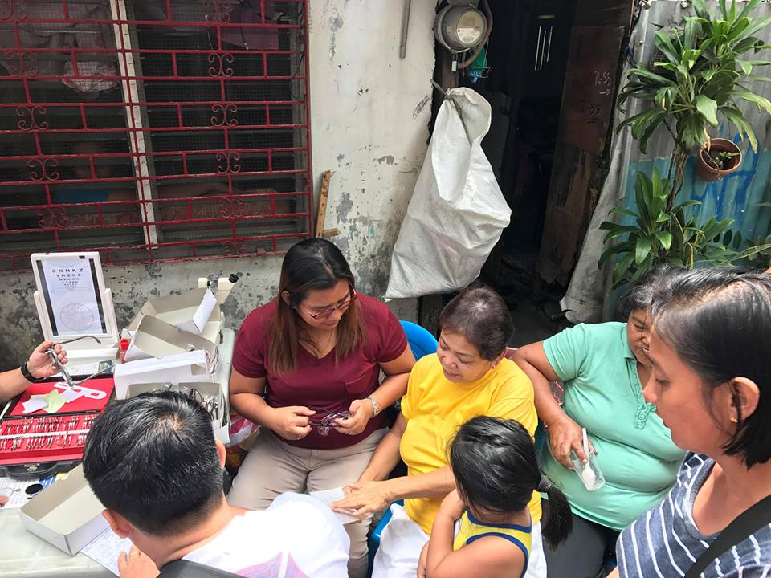

MISSION
Palatiw Barangay Council is committed to have a community that is peaceful,
safe, clean and lived by healthy, educated, globally competitive resident
through active participation of the constituents.
History
PALATIW was the third among four first Barangays of Pasig. The Barangays of Malinao, Bambang, Palatiw and Tipas were awarded by Legaspi to one of his trusted Lieutenants, Don Juan Dela Isla on November 14,1571 when the Pasig mission was made a Parish under the jurisdiction of Tondo on January 20,1572 it only stated 10 Visitas namely:hanggang sa pangongontrata ng trabaho.These four barangays were derived from the name of the Olive Tree and the original name of Palatiw was PALATIA.
Source – Pasig City Portrait of new Metropolis 2000. San Nicolas, Polo, Pinagbuhatan, PALATIW, Maybunga, Sagad, Bambang, Malinao, Tipas, Mandalava, Botin and Agoho. In like manner, the names of Barangays of Pasig echo the largesse of nature that the blessed the the land. The name of Barangay Sagad. Which was found west of the once navigable PALATIW River means edge.
Projects

BARANGAY PALATIW COMMUNITY POCKET PLAYGROUND AND GARDEN - THE MAKING. Started two weeks ago and still on its upgrading stage. Community gardens have many benefits to our society. They fill our need for physical activity, social interaction at times through play, and contact with nature. P/B Dinah Guevarra and In House Artist Antonio Dong Caliwag are the authors of the project. This is in line with the Women’s Month 2018 as part of the Serbisyong Publiko for the women of Palatiw.
BARANGAY PALATIW "EYE CARE FOR YOU PROGRAM" simultaneous with Barangay Mo,Guapo Clean Up Drive Program through the initiative of Barangay Palatiw Council led by P/B Dinah Guevarra Family and Children Commitee Chairman Kgd. Al Cruz and her behalf Cruz Jean with Disaster Preparedness Czar Eriberto Guevara. Happened on March 17,2018 at Jasmin Compound and Villa Tech. 100 reading glasses, 20 glasses for far sighted and 10 for children has been given free for Palatiw Constituents.

KITA KITA PROJECT | Barangay Palatiw Livelihoods & Craft Entrepreneurship Program Initiated by P/B Dinah Guevarra on March 15,2018 supported and sponsored by chosen students St. Paul College Pasig - Fr. Louis Chauvet Foundation School targets women from economically weaker backgrounds and trains them in a craft-based skill. They strongly believe that women are the backbone of society, and if empowered to be financially independent, they can sustain their families and ensure education for their children, improve standards of living, and access better healthcare.
Upcoming Events
APR 13, 2018 | OPERATION TULI
8-12 noon , PALATIW BGY. HALLOFFICIALS

Guevarra, Dinah Raymundo
Punong Barangay

Hufancia, Robinson Avila
Barangay Kagawad

Hizon, Robby Matri
Barangay Kagawad
Cruz, Lorenzo De Leon
Barangay Kagawad

Cruz, Aldwin
Barangay Kagawad

Sylva, Ronald Ryan Velasco
Barangay Kagawad

Guevarra, Chester Chiapco
Barangay Kagawad

Licsi, Jaime Caballero
Barangay Kagawad